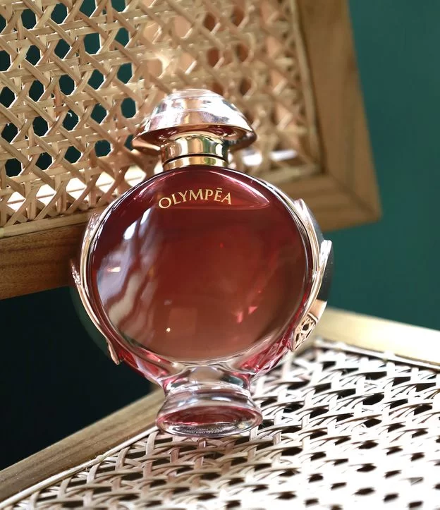

Perfume Lancôme La Vie Est Belle Rose Extradionarie Feminino Eau de Parfume Sua composição, criada por perfumistas franceses mundialmente reconhecidos, é uma sinfonia que combina a base do icônico La Vie Est Belle e novos acordes florais altamente viciantes. Apresentamos três facetas diferentes da rosa de Lancôme, unidas para criar a rosa perfeita a partir do Absoluto de Rosa, Agua de Rosas e a “Rosa do Espaço” extraída através da tecnologia à vácuo headspace. O desenho do frasco é um espetáculo a parte, uma rosa nascida do cristal, dentro do icônico sorriso de La Vie Est Belle. La Vie Est Belle Rosa Extraordinária convida todas as mulheres a florescer o seu lado mais extraordinário e a criar o seu próprio caminho para a felicidade.

Miss Dior DIOR Eau de Parfum - Perfume Feminino 100ml O novo Perfume Miss Dior, de Dior, é trabalhado com a luxuosa combinação das notas florais frescas semelhantes a um buquê deslumbrante e iluminado. Entre os acordes estão a Rosa Centifolia, o Lírio do Vale e a Peônia. Já o laço ícone do frasco é uma verdadeira obra de arte, pois cada fita Jacquard foi trabalhada em um das mais renomadas oficinas de fabricação de fitas francesas como os mais sofisticados vestidos nas passarelas.

Perfume Lily eau de parfum tradicional feminino 75ml - Boticário ily Eau de Parfum é uma fragrância sofisticada, que traz a personalidade do lírio – principal ingrediente – combinada aos florais brancos marcantes. Por ser um Eau De Parfum, possui maior concentração de óleos essenciais e, por isso, tem maior durabilidade na pele. O óleo essencial do Lírio, exclusivo da fragrância, é obtido por meio de uma técnica muito antiga de extração chamada "enfleurage“, tornando a fragrância feminina única e especial. O Lily Eau de Parfum traz a mais pura fragrância dos lírios para o dia a dia de mulheres românticas e que apreciam o que há de bom na vida. Seus acordes marcantes revivem a exclusividade do fazer artesanal e traduzem o luxo de satisfazer intensamente as emoções. Porque são elas que fazem você ser única.Um eau de parfum para exaltar mulheres que combinam delicadeza e intensidade!

Liberté Nuit Desodorante Colônia 100ml - Wepink O Liberté Nuit Desodorante Colônia é uma fragrância que captura a essência de um encontro apaixonado sob a luz do luar, oferecendo um convite inesquecível para noites estreladas cheias de amor, sendo o aroma perfeito para quem deseja encantar e ser inesquecível todas as noites. Sua experiência sensorial elegante começa com o doce suave da amêndoa, que se encontra com um abraço frutado. No coração, uma paixão proibida desabrocha com notas de violeta, rosa damascena, ameixa seca e magnólia. Nas profundezas da noite, um mistério encantador se revela, transbordando sensualidade e paixão com notas amadeiradas e o doce da baunilha.
Olympéa legend - paco rabanne O Olympéa Legend, de Paco Rabanne, é daqueles perfumes femininos singulares. Ele oscila entre o frescor e a sensualidade, com uma fragrância oriental encantadora.

Good girl - carolina herrera O Olympéa Legend, de Paco Rabanne, é daqueles perfumes femininos singulares. Ele oscila entre o frescor e a sensualidade, com uma fragrância oriental encantadora.

Elysée Eau de Parfum O Elysée Eau de Parfum possui uma embalagem extremamente sofisticada que remete a uma joia. A sua fragrância feminina contém matérias-primas de alta qualidade e riqueza como a Mandarina Orpur, que remete a extrema sofisticação da família olfativa Chypre. Ela é modernizada por notas ambaradas, uma grande tendência da perfumaria feminina internacional, perfeito por quem se interessa por fragrâncias marcantes. Por ser um Eau De Parfum, possui maior concentração de óleos essenciais e, matérias-primas de alta qualidade, por isso, tem maior durabilidade na pele

Libre Eau de Parfum Feminino Uma reinvenção do perfume floral, combina a Essência de Lavanda da França com a sensualidade da Flor de Laranjeira Marroquina, para uma fusão floral única complementada por uma nota ousada do Acordo de Almíscar.
Perfume Lady Million EDP 80ml A rica fragrância feminina combina as flores brancas do jasmim árabe e da laranjeira em seu coração com uma proposta fresca e flamejante de néroli, laranja amarga e framboesa. O caminho final conta com a assinatura carnal e sensual do patchouli e um toque de sabor do mel. Uma fragrância amadeirada com notas vibrantes e aromas poderosos que beira a dependência.